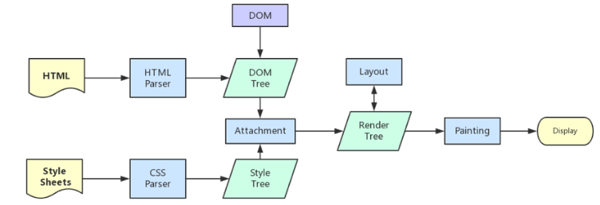

# 从 URL 输入到页面展现到底发生什么？
# 前言
打开浏览器从输入网址到网页呈现在大家面前，背后到底发生了什么？经历怎么样的一个过程？先给大家来张总体流程图，具体步骤请看下文分解！

总体来说分为以下几个过程:
- DNS 解析:将域名解析成 IP 地址
- TCP 连接：TCP 三次握手
- 发送 HTTP 请求
- 服务器处理请求并返回 HTTP 报文
- 浏览器解析渲染页面
- 断开连接：TCP 四次挥手
# 内容
# 一、URL 到底是啥
URL（Uniform Resource Locator），统一资源定位符，用于定位互联网上资源，俗称网址。
比如 http://www.w3school.com.cn/html/index.asp，遵守以下的语法规则：
scheme://host.domain:port/path/filename
各部分解释如下：
scheme- 定义因特网服务的类型。常见的协议有 http、https、ftp、file，其中最常见的类型是 http，而 https 则是进行加密的网络传输。host- 定义域主机（http 的默认主机是 www）domain- 定义因特网域名，比如 w3school.com.cnport- 定义主机上的端口号（http 的默认端口号是 80）path- 定义服务器上的路径（如果省略，则文档必须位于网站的根目录中）。filename- 定义文档/资源的名称
# 二、域名解析（DNS）
在浏览器输入网址后，首先要经过域名解析，因为浏览器并不能直接通过域名找到对应的服务器，而是要通过 IP 地址。
# 2.1 IP 地址
IP 地址是指互联网协议地址，是 IP Address 的缩写，IP 地址是 IP 协议提供的一种统一的地址格式，它为互联网上的每一个网络和每一台主机分配一个逻辑地址，以此来屏蔽物理地址的差异。IP 地址是一个 32 位的二进制数，比如127.0.0.1为本机 IP。
**域名就相当于 IP 地址乔装打扮的伪装者，带着一副面具。它的作用就是便于记忆沟通的一组服务器的地址。**用户通常使用主机名或域名来访问对方的计算机，而不是直接通过 IP 地址访问。因为与 IP 地址的一组纯数字相比
# 2.2 什么是域名解析
DNS 协议提供通过域名查找 IP 地址，域逆向从 IP 地址反查域名的服务。DNS 是一个网络服务器，我们的域名解析简单来说就是在 DNS 上记录一条信息记录。
例如 baidu.com 220.114.23.56（服务器外网IP地址）80（服务器端口号）
# 2.3 浏览器如何通过域名去查询 URL 对应的 IP 呢
- 浏览器缓存：浏览器会按照一定的频率缓存 DNS 记录。
- 操作系统缓存：如果浏览器缓存中找不到需要的 DNS 记录，那就去操作系统中找。
- 路由缓存：路由器也有 DNS 缓存。
- ISP 的 DNS 服务器：ISP 是互联网服务提供商(Internet Service Provider)的简称，ISP 有专门的 DNS 服务器应对 DNS 查询请求。
- 根服务器：ISP 的 DNS 服务器还找不到的话，它就会向根服务器发出请求，进行递归查询（DNS 服务器先问根域名服务器.com 域名服务器的 IP 地址，然后再问.baidu 域名服务器，依次类推）

# 2.4 小结
浏览器通过向 DNS 服务器发送域名，DNS 服务器查询到与域名相对应的 IP 地址，然后返回给浏览器，浏览器再将 IP 地址打在协议上，同时请求参数也会在协议搭载，然后一并发送给对应的服务器。接下来介绍向服务器发送 HTTP 请求阶段，HTTP 请求分为三个部分：TCP 三次握手、http 请求响应信息、关闭 TCP 连接。

# 三、TCP 三次握手
# 四、发送 HTTP 请求
TCP 三次结束后，开始发送 HTTP 请求报文。
请求报文由请求行（request line）、请求头（header）、请求休息三个部分组成，如下图所示：

参考http 详情
# 五、服务器处理请求并返回 HTTP 报文
# 5.1 服务器
服务器是网络环境中的高性能计算机，它侦听网络上的其他计算机（客户机）提交的服务请求，并提供相应的服务，比如网页服务、文件下载服务、邮件服务、视频服务。而客户端主要的功能是浏览网页、看视频、听音乐等等，两者截然不同。每台服务器上都会安装处理请求的应用——web server。常见的 web server 产品有 apache、nginx、IIS 或 Lighttpd 等。
**web server 担任管控的角色，**对于不同用户发送的请求，会结合配置文件，把不同请求委托给服务器上处理相应请求的程序进行处理（例如 CG 脚本、JSP 脚本，servlets，ASP 脚本，服务端 JavaScript，或者一些其它的服务器端技术等），然后返回程序处理产生的结果作为响应。
# 5.2 MVC 后台处理阶段
后台开发现在有很多框架，但大部分

视图
它是提供给用户的操作界面，是程序的外壳。
模型
模型主要负责数据交互。 在 MVC 的三个部件中，模型拥有最多的处理任务。一个模型能为多个视图提供数据。
控制器
**它负责根据用户从“视图层”输入的指令，选取“模型层”中的数据，然后对其进行相应的操作，产生最终结果。**控制器属于管理者角色，从视图接收请求并决定调用哪个模型构件去处理请求，然后再确定用哪个视图来显示模型处理返回的数据。
这三层是紧密联系在一起的，但又是互相独立的，每一层内部的变化不影响其他层。每一层都对外提供接口（Interface），供上面一层调用。
至于这一阶段发生什么？简而言之，首先浏览器发送过来的请求先经过控制器，控制器进行逻辑处理和请求分发，接着会调用模型，这一阶段模型会获取 redis db 以及 MySQL 的数据，获取数据后将渲染好的页面，响应信息会以响应报文的形式返回给客户端，最后浏览器通过渲染引擎将网页呈现在用户面前。
# 5.3 http 响应报文
响应报文由响应行（request line）、响应头部（header）、响应主体三个部分组成。如下图所示：

(1)响应行包含：协议版本，状态码，状态码描述
状态码规则如下：
1xx：指示信息--表示请求已接收，继续处理。 2xx：成功--表示请求已被成功接收、理解、接受。 3xx：重定向--要完成请求必须进行更进一步的操作。 4xx：客户端错误--请求有语法错误或请求无法实现。 5xx：服务器端错误--服务器未能实现合法的请求。
(2) 响应头部包含响应报文的附加信息，由 名/值 对组成
(3) 响应主体包含回车符、换行符和响应返回数据，并不是所有响应报文都有响应数据
# 六、浏览器解析渲染页面
浏览器拿到响应文本 HTML 后，接下来介绍下浏览器渲染机制

浏览器解析渲染页面分为以下五个步骤：
- 根据 HTML 解析出 DOM 树
- 根据 CSS 解析生成 CSS 规则树
- 结合 DOM 树和 CSS 规则树、生成渲染树
- 根据渲染树计算每一个节点的信息
- 根据计算好的信息绘制页面
# 6.1 根据 HTML 解析 DOM 树
- 根据 HTML 的内容，将标签按照结构解析成为 DOM 树，DOM 树解析的过程是一个深度优先遍历。即赞构建当前节点的所有子节点，再构建下一个兄弟节点。
- 在读取 HTML 文档，构建 DOM 树的过程中，若遇到 script 标签，则 DOM 树的构建会暂停，直至脚本执行完毕。
# 6.2 根据 CSS 解析生成 CSS 规则树
- 解析 CSS 规则树时 js 执行将暂停，直至 CSS 规则树就绪。
- 浏览器在 CSS 规则树生成之前不会进行渲染。
# 6.3 结合 DOM 树和 CSS 规则树、生成渲染树
- DOM 树和 CSS 规则树全部准备好了以后，浏览器才会开始构建渲染树。
- 精简 CSS 并可以加快 CSS 规则树的构建，从而加快页面相应速度。
# 6.4 根据渲染树计算每一个节点的信息（布局）
- 布局：通过渲染树中渲染的信息，计算出每一个渲染对象的做位置和尺寸。
- 回流：在布局完成后，发现了某个部分发生了变化影响了布局，那就需要倒回去重新渲染。
# 6.5 根据计算好的信息绘制页面
- 绘制阶段，系统会遍历呈现树，并调用呈现器的“paint”方法，奖呈现器
- 重绘：某个元素的背影颜色，文字颜色等，不影响元素周围或内部布局的属性，将只会引起浏览器的重绘。
- 回流：某个元素的尺寸发生了变化，则需重计算渲染树，重新渲染。
# 七、断开连接
# 参考资料
- 从 URL 输入到页面展现到底发生什么？
- 说一说从输入 URL 到页面呈现发生了什么？
- 04 | 导航流程：从输入 URL 到页面展示，这中间发生了什么？
- 《网络是怎么连接的》
- 面试官：浏览器输入 URL 后发生了什么？
# 联系作者
平凡世界，贵在坚持。